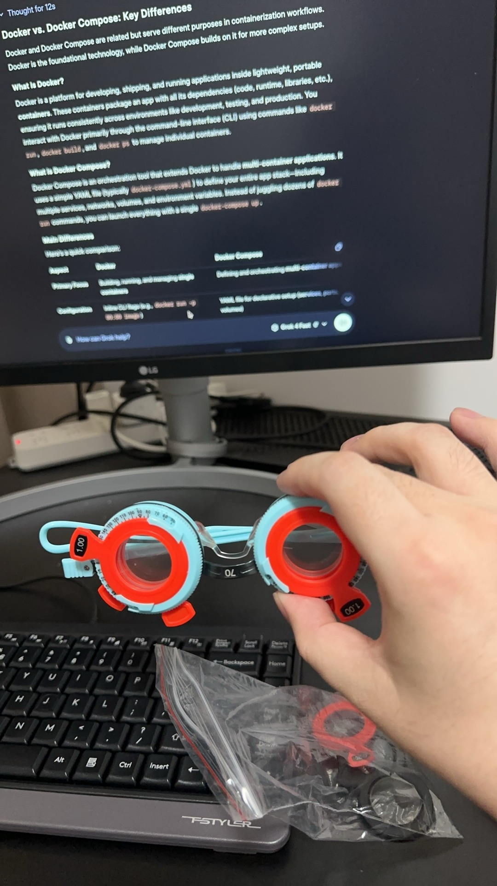
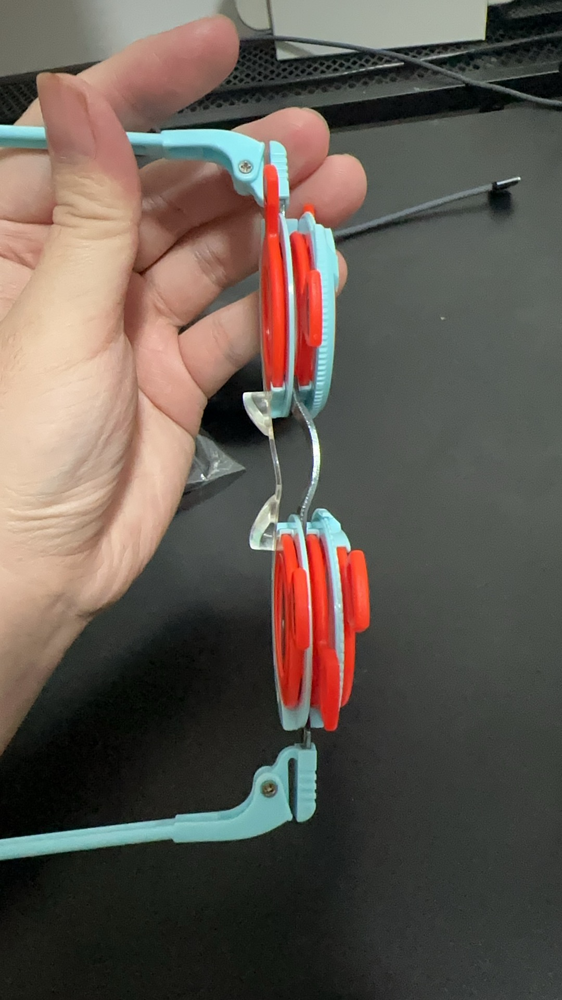

मेरे आदर्श चश्मे के नुस्खे को खोजने के लिए ट्रायल लेंस का उपयोग करना | मूल, AI द्वारा अनुवादित
 स्रोत: स्वयं-स्क्रीनशॉट
 स्रोत: स्वयं-स्क्रीनशॉट
-
एक डेस्कटॉप कंप्यूटर आमतौर पर हमारी आँखों से लैपटॉप की तुलना में अधिक दूर होता है।
-
डेस्कटॉप स्क्रीन को मुश्किल से स्पष्ट रूप से देखने के लिए, हमें अक्सर अनुकूलित चश्मे की आवश्यकता होती है।
-
अपनी ट्रायल लेंस के लिए, मैं -3.75 / -1.75 को आधार मायोपिया सुधार के रूप में, -0.25 / -0.25 और -0.50 / -0.50 को वृद्धिशील या घटते लेंस के रूप में, और दृष्टिवैषम्य के लिए -1.00 / -1.00 का उपयोग करता हूँ।
-
ट्रायल फ्रेम में तीन स्लॉट होते हैं। उनका उपयोग करने का एक सामान्य तरीका यह है कि आधार मायोपिया लेंस को एक स्लॉट में रखा जाए, वृद्धिशील या घटते लेंस को दूसरे में, और अंतिम स्लॉट को दृष्टिवैषम्य लेंस के लिए आरक्षित रखा जाए। आप -0.25 और -0.50 लेंस को एक ही समय में संयोजित नहीं कर सकते, क्योंकि एक स्लॉट दृष्टिवैषम्य सुधार के लिए छोड़ा गया है।
-
चीन में Pinduoduo पर ट्रायल चश्मे की कीमत लगभग 48 CNY है, और ट्रायल लेंस की कीमत लगभग 28 CNY है।
-
मुझे अफ़सोस है कि मैंने उन्हें पहले नहीं खरीदा और उनके बारे में नहीं सीखा। यह इतना आसान है। अगर मैंने पहले सीख लिया होता, तो मैं पिछले तीन सालों में पांच बार प्रिस्क्रिप्शन के लिए स्टोर जाने से बच सकता था, और मुझे रोज़ाना इस्तेमाल के लिए अधिक आरामदायक चश्मे मिल सकते थे।